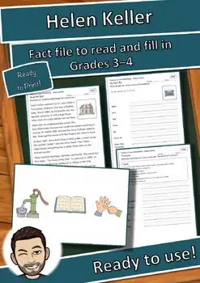
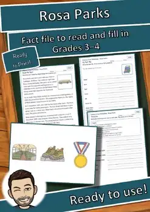
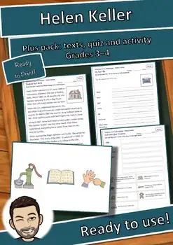
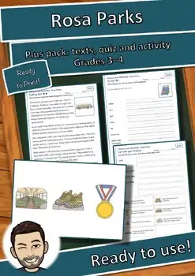
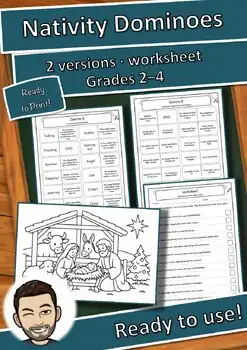
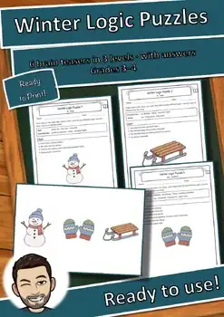

General Knowledge Worksheets
1583 printable General Knowledge worksheets (PDF) with answer keys: reading comprehension passages, reading trails and more – no prep, filter by grade.
1,583 resources
Grade
By grade: 1st Grade · 4th Grade · 5th Grade · 9th Grade

Family Life Reading Comprehension Passages | Life Skills Scavenger Hunt 5-6

La francophonie – French Reading BUNDLE | French-Speaking World Fiches

Valentine's Day & Kindness Reading BUNDLE | Friendship, Respect & SEL

Fairy Tale Workshop: Hansel and Gretel Plus Pack

Fairy Tale Workshop: Red Riding Hood Plus Pack

Famous Lives Workshop: Helen Keller – Fact file to read and fill in (FREE)

Famous Lives Workshop: Rosa Parks – Fact file to read and fill in (FREE)

Famous Lives Workshop: Helen Keller – Plus pack: texts, quiz and activity

Famous Lives Workshop: Rosa Parks – Plus pack: texts, quiz and activity

Picture Card Workshop: Pets – Memory Game (FREE)

Picture Card Workshop: Pets – Picture & Word Cards (FREE)

Picture Card Workshop: Feelings – Memory Game (FREE)

Picture Card Workshop: Feelings – Picture & Word Cards (FREE)

Picture Card Workshop: Pets – Plus: Clip Cards & Practice

Picture Card Workshop: Feelings – Plus: Clip Cards & Practice

Nativity Story Dominoes: 2 Versions, Keywords and Sentences (Gr. 2-4) FREE

Secret Kindness Elf Cards: 24 Tasks and Secret Notes (Gr. 1-4) FREE

Classroom Countdown Calendar: 24 Doors, Idea Cards (Gr. 1-4) FREE

Winter Logic Puzzles: 6 Brain Teasers, 3 Levels (Gr. 3-4) FREE

ß – Italian Reading Comprehension Worksheet (Scheda): Cloze & Listening

Zeuge – Italian Reading Comprehension Worksheet (Scheda): Cloze & Listening

Yves Klein – Italian Reading Comprehension Worksheet (Scheda): Cloze & Listening

Yo-yo – Italian Reading Comprehension Worksheet (Scheda): Cloze & Listening

Yen – Italian Reading Comprehension Worksheet (Scheda): Cloze & Listening

Wilderness – Italian Reading Comprehension Worksheet (Scheda): Cloze & Listening

Wellness – Italian Reading Comprehension Worksheet (Scheda): Cloze & Listening

Watt – Italian Reading Comprehension Worksheet (Scheda): Cloze & Listening

Vuoto – Italian Reading Comprehension Worksheet (Scheda): Cloze & Listening

Volk – Italian Reading Comprehension Worksheet (Scheda): Cloze & Listening

Vite – Italian Reading Comprehension Worksheet (Scheda): Cloze & Listening

Vitamin – Italian Reading Comprehension Worksheet (Scheda): Cloze & Listening

Virus – Italian Reading Comprehension Worksheet (Scheda): Cloze & Listening

Vino – Italian Reading Comprehension Worksheet (Scheda): Cloze & Listening

Viereck – Italian Reading Comprehension Worksheet (Scheda): Cloze & Listening

Video – Italian Reading Comprehension Worksheet (Scheda): Cloze & Listening

Vichinghi – Italian Reading Comprehension Worksheet (Scheda): Cloze & Listening

Via Lattea – Italian Reading Comprehension Worksheet (Scheda): Cloze & Listening

Vetro – Italian Reading Comprehension Worksheet (Scheda): Cloze & Listening

Vespinae – Italian Reading Comprehension Worksheet (Scheda): Cloze & Listening

Vescovo – Italian Reading Comprehension Worksheet (Scheda): Cloze & Listening

Venus – Italian Reading Comprehension Worksheet (Scheda): Cloze & Listening

Vento – Italian Reading Comprehension Worksheet (Scheda): Cloze & Listening

Vendetta – Italian Reading Comprehension Worksheet (Scheda): Cloze & Listening

Veleno – Italian Reading Comprehension Worksheet (Scheda): Cloze & Listening

Utopia – Italian Reading Comprehension Worksheet (Scheda): Cloze & Listening

Uranio – Italian Reading Comprehension Worksheet (Scheda): Cloze & Listening

Università – Italian Reading Comprehension Worksheet (Scheda): Cloze & Listening

Uniforme – Italian Reading Comprehension Worksheet (Scheda): Cloze & Listening
No resources found – try a different search term or filter.